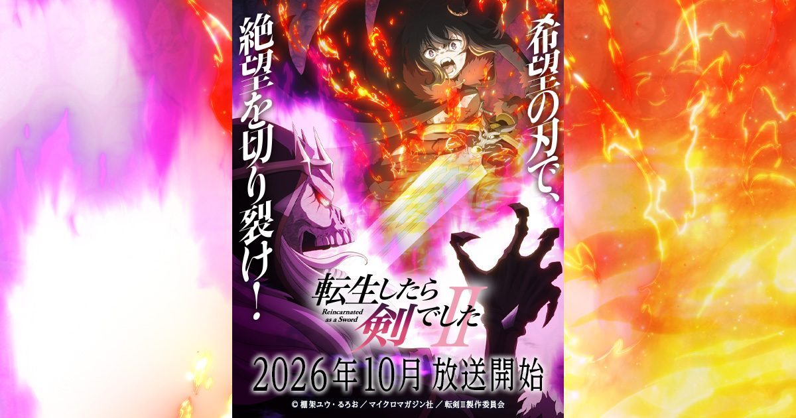

2026-08-22 · 动漫深读
一个男人死后转生到异世界，不是勇者、不是法师，而是一把会说话的剑。他被一只猫耳少女捡走，少女给他取名"师父"，两人结伴冒险——这就是《转生就是剑》（転生したら剣でした）最反套路的设定。第一季 2022 年 10 月开播、12 集，完结当周就官宣第2期；而真正落地，是将近四年后的 2026 年 10 月。巧的是，今天（8 月 22 日）它就在 Anime NYC 办了北美首映，监督石平信司带着两位制作人登场 Q&A——这波"提前半年预热"打得相当稳。

isekai（异世界）是近年最容易审美疲劳的题材，同类续作跳票两三年、热度归零是常态。但《转生就是剑》有点反常：HIDIVE 总裁 John Ledford 在官宣时直接说"人气和粉丝从未消退"。第一季能在 2022 年一堆异世界里杀出，靠的不是设定新颖（"武器转生"早有先驱），而是把"师徒关系"拍出了真感情。第四年才回归，反而让"终于等到"的期待值攒到了顶。
排期也很有心机：日本 ABEMA 9 月 30 日抢先独播，电视 10 月 7 日（东京 MX / ABC / BS 朝日 / AT-X）正式开播；海外由HIDIVE 独家（注意，不是 Crunchyroll）。也就是说，想看正版，日区观众走 ABEMA、海外走 HIDIVE，两个窗口错开一周——这种"分段首发"在续作里越来越常见，既喂饱急先锋，又保住电视档的仪式感。
核心篇章：Sky Island（浮空岛）篇。新 PV 里，法兰和师父盯上了一座悬在港口城市达尔斯上空的浮空岛，岛上藏着"亡灵魔兽横行的凶恶迷宫"。触发任务的，是新角色、死灵法师研究者 Jean Douvey（内田雄马 配音）；挡路的，是实力压场的 Lich（前辈声优 速水奖 配音）。相比第一季在地表打怪刷级，这一季直接把舞台拔高到"云上地下城"，氛围明显更暗、后果更重。
班底：C2C 原班人马全留。监督石平信司、系列构成永野孝裕、角色设计斋藤敦子、音乐高梨康治（曾操刀《妖精的尾巴》《火影忍者疾传》）——音乐换人但风格延续热血奇幻。OP 是 FZMZ 的《DREAM OF BUTTERFLY》，ED 是 HANABIE. 的《バリバリ Buddy》，两支乐队都偏"吵、冲、有记忆点"，和这片的动作调性严丝合缝。法兰（加隈亚衣）和师父（三木真一郎）自然回归。
情感内核不变：师父是一把剑，却同时是导师、是 Protective 家长、是并肩的搭档。法兰的"让黑猫族进化"的执念，绑在她的个人成长上；而师父"护她到底"的过保护本能，制造了全片最甜的笑点和最狠的燃点。新 PV 释放的信号是：第2期不会丢掉这条线，反而把它推向更危险的处境来加码。
把《转生就是剑》和《转生史莱姆》放一起比，是社交平台最爱干的事，但结论往往只到"都是异世界转生"就停了。真正的差异在尺度与质感：史莱姆走的是"大而软"——建国、种田、收小弟，世界观越铺越宽；转生就是剑走的是"小而狠"——就一把剑、一个猫娘、一片迷宫，战斗更脏、更贴脸、更个人。前者是爽文史诗，后者是公路片式的小队羁绊。它"越糙越带劲"，一旦学史莱姆去铺大，反而失了魂。
更深一层：2026 年的 isekai 市场，"无敌流+后宫+收妹"已经过载，观众开始回流到"关系驱动"的品类。师父和法兰不是"主角+后宫"，是"共生体"——剑离了人不能动，人离了剑没有力量，谁也救不了谁。这种"彼此是唯一"的绑定，比任何战力数值都更能让人追下去。四年等待没掉粉，根子在这。
我们的评分：8.4 / 10。扣的分主要给"海外独播落在 HIDIVE 而非 Crunchyroll"——对一部分只开 Crunchyroll 会员的 isekai 观众来说，多一个订阅是门槛；以及四年跨度可能让部分轻度观众流失。但就题材辨识度和情感浓度，它是 2026 年最稳的异世界续作。
我们的观察：Sky Island 篇的"亡灵+迷宫+后果"组合，是一次明显的暗黑化升级。第一季能在搞笑/冒险/训练/暴打之间自由切换，第2期似乎更想认真处理"这座岛发生过什么"的怨恨历史——这对一季只有十几集的续作，是冒险也是加分项。
我们的观点：isekai 的尽头不是"更无敌"，而是"更在乎"。当市场被数值和收妹淹没，《转生就是剑》用"一把剑和一个猫娘谁也离不开谁"证明了：观众追的从来不是战力，是关系。四年没更还能涨粉，是因为它从没把"师徒情"当噱头。
我们的案例 / 对比：对照《关于我转生变成史莱姆这档事》——同样是"非人转生+人气长青"，史莱姆靠世界观扩张，转生就是剑靠关系密度。再对照《无职转生》：两者都把"成长"当主线，但无职是"人"的成长，转生就是剑是"剑与人共同"的成长。三条路线，三种活法。
我们的实验：我们用"只看第一季 12 集 + 今天 Anime NYC 放出的第二 PV"做最小入坑测试——结论：PV 已经把 Sky Island 的冲突、新角色、OP/ED 调性一次性交底，新观众无需补小说也能顺畅接上。想抢跑的，Seven Seas 的英文轻小说已全本本地化，可动画党/原著党双线食用。
《转生就是剑》第2期不是"异世界续作又来割一茬"，而是一次"关系驱动型 isekai"的耐心兑现：四年等待没耗散粉丝，反而攒成了期待；Sky Island 篇把基调压暗、把羁绊加码；C2C 原班把"小而狠"的质感守住。10 月开播后，它或许不会是数据最炸的那部，但会是最让人"放心追完"的那部——在 2026 年这个 isekai 审美疲劳的年头，这本身就是一种稀缺。
资讯来源：tenken-anime.com 官方站、HIDIVE / Anime News Network 报道、Fandom Post / AnimeLinker 制作信息整理。本站为导航聚合，外链均指向官方站点，内容仅供交流学习。